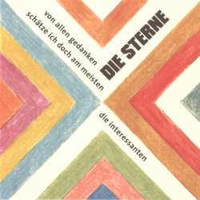

ich bleibe an der haustür stehen / um noch mal nach dem haus zu sehen / die tür ist auf die wohnung leer / ich glaub mein leben gibt nichts her / wir sitzen auf der treppe / um uns geschichten zu erzählen / wenn ich noch'ne gute lüge hätte / würde ich mich nicht länger quälen / denn von allen gedanken / schätze ich doch am meisten / die interessanten / ein koffer auf der parkbank / harmloses ding, wie man meint / und innen glitzert es schon / bevor das erste licht hereinscheint. / den habe ich eben erst geklaut / in einem zwielichtigen laden / sie hatten mir vertraut / jetzt haben sie den schaden
ich bin ein ganz normaler tag, ich bin so wie ein leeres blatt / und nichts hat sich erledigt / alles liegt genau so da, wie es gestern abend war / einem trümmerhaufen ähnlich / es betrifft mich keine schuld, ich bin genausoviel geduld, / wie wenig. / ich bin erbarmungslose uhr, ich geh nicht nach, noch geh ich vor, / sag jetzt bloß nichts ich versteh nichts. / du fragst dich: / war die hoffnung blind, die nur den morgen, nicht das grauen sah? / mein liebes kind, / ich bin die bühne nur und nicht das drama, / ich bin nicht wirklich die gefahr.
irgendwas gehört und aufgetan / irgendwas zerstört, was ein fehler war / notdürftig repariert / schadensbegrenzung engagiert / und weiter - gefahren / man achtet immer nur auf seinen vorteil / und wenn es kracht / schaut der vorteil nur zurück und sacht / ich hab doch gar nichts gemacht / bin doch abstrakt / bin so abstrakt / man denkt gerne an den eigenen kurzfristigen gewinn / wie gewonnen, so zerronnen und den nächsten schon im sinn / das dauert, bis das auffällt, was da fehlt / hat man die chance es zu besorgen schon verspielt / man denkt ja immer nur an seine zukunft / und wenn es kracht / schaut die zukunft nur zurück und sacht / ich hab doch gar nichts gemacht / bin doch abstrakt / bin so abstrakt / sie läßt sich nicht, sie will sich nicht lassen / ach was soll das, laß mich nur machen / denkt man sich und hat schon viel zu viel verändert / die nacht ist längst vorbei und die augen sind gerändert / man denkt ja immer nur an seine liebe / und wenn es kracht / schaut die liebe nur zurück und sacht / ich hab doch gar nichts gemacht
in einem laden zu sitzen, der uns persönlich nichts bringt, / macht uns nächtelang schwitzen, weil der tag nicht so swingt. / wir sehen häufig traurig aus, schauen viel zu oft auf die uhr / und beklemmter als andere, gehen wir zur akupunktur. / das ist unsinn, laß es sein, laß doch mal die sonne rein / und genieße ihren widerschein - widerschein / nur weil die welt so bescheuert ist wie ihr fernsehprogramm, / sind wir immer zu hause und schauen es doppelt so lange an. / daß nie jemand zurückschaut, macht uns depressiv / und wir fallen auf scientology rein, oder das hütchenspiel / weil uns beziehungen wichtig sind, kriegen die alles ab. / und die, die wir lieben, kriegen uns dadurch satt. / wenn wir dann wieder einsam sind, das ist der wunde punkt: / wissen wir, daß wir traurig waren, aber nicht mehr den grund
(instrumental)
alles ist so süß und zuckrig / klebrig - vermutlich / alles hält in dieser welt / alles hängt ja nur am geld / wir sind alle nur maschinen / die dazu da sind zu verdienen / was wir alles so gebrauchen / um halbwegs ordentlich zu laufen / wir sind alle automaten / die sich in verschiedene staaten / teilen und sich bewegen / um den scheiß zu überleben
komm rein und setz dich, willst du kaffee oder tee, bier ist leider alle ich hätte höchstens noch'n wodka, nee - ist leider auch alle. wie war die fahrt? sie war beschissen, habe ich recht. und wie der start, von eurer neuen tournee. ah ja, ich hör schon wundervoll. seit ein zwei drei jahren läuft es ja auch wirklich voll gut bei euch. ich weiß noch, keiner wollte ihn haben diesen rockbandscheiß ich kann mich gut genug daran erinnern ich weiß es noch als wär es erst gestern gewesen. wir hatten lieder dagegen. und argumentative gesten. wir haben diese typen gehaßt die sich aufspielen, wenn sie meinen daß sie dick im geschäft sind irgendwo in einem laden von vielen. und daß du nur ein arschloch bist, es sei denn erfolgreich denn dann stellst du fest, wenn du es zuläßt, daß dein arsch genau der ort ist wo sie rein wollen. wir wußten das vorher schon nun zum lohn haben wir endlich den beweis. ich bin nur froh wenn es darüber hinaus noch etwas zu erzählen gibt, hast du leute getroffen, etwas von ihnen mitgekriegt, oder reichte die zeit kaum und die energie. ich weiß, viel bleibt nicht übrig doch ich ärgere mich nie. zum glück gibt's auch noch parties, die ich selbst besuchen würde und das tue ich auch wenn's geht. hoppla ganz schön spät, was sind denn das für sachen. ich gerate hier ins schwatzen, dabei wollte ich kaffee machen. / oh ja die fotos sind gut dieses mal keine frage, es gab wohl zwischendurch ein par freie tage. nicht ausschließlich die aussicht aus dem bus und backstageräume verschwommene häuser und belanglose bäume. ihr habt euch wohl amüsiert oh gott wie sieht der denn aus. was ist passiert. das bild vernichtest du wohl besser oder schneid wenigstens den kopf raus. ich bin ja heimisch, häng hier seit ein par tagen nur noch rum und spreche mit den wänden und die wände bleiben stumm. eigentlich habe ich genug zu tun und ich wollte was lesen, nur werd ich das gefühl nicht los ich müßte erst von irgendwas genesen. bevor ich irgendetwas anderes anfangen mag. und dann wird auch noch das geld knapp - oder habe ich nur vergessen wo es lag? was soll's, erzähl, ich hör zu es geht gut. ich werd nicht sterben an der krankheit. ich sammel mut und kraft um nicht abzustumpfen und antriebslos durchzusumpfen. / gut, das mit dem moos ist geklärt, wir fahren einfach wieder los. und sei es, daß man sich ernährt von in bekannten kreisen bekannten gedanken. dabei muß es ja nicht bleiben, und warum nicht verreisen.
du wartest und wartest / das dauert und dauert / es reicht / kannst du dich nicht endlich mal verbindlich entscheiden, wie willst du das vermeiden ich hab keine ahnung wie das sonst gehen soll / alles hängt in der luft / alles unausgesprochen / du drückst dich, du mauerst / ununterbrochen / ich gehe auf und ab und bin am ende. ich starre auf meine hände; an der fernbedienung blutig gemacht, mitten in der nacht. hast du irgendwas gesagt oder in den letzten hundert jahren überhaupt mal nachgedacht? laß das telefon klingeln, mach daß irgendwas passiert, ich hab jetzt jedenfalls schon mehr als einmal und ich glaub fast viel zu oft an dich appelliert: / alle warten, nichts bewegt sich / nur weil du dich nicht bewegst / irgendjemand wird noch durchdrehen, / wenn du das nicht bald verstehst
die füße sind so weit entfernt von meinen augen. und so muß ich manchmal staunen, daß sie auf denselben namen hören wie ich. und sich nicht fragen, meint der mich. was ist schon dieser körper, zwei meter draht bis zur zentrale. egal ob mittelmäßige oder geniale. dazwischen ein verdauungstrakt, der ärger macht oder auch nicht. und ein ahnungsloser geist ruft nur, tut doch einfach eure pflicht. / nicht wirklich nicht bewußt nur dieser wind an feinen härchen. nützlich nicht, nicht ahnungslos, wie märchen, hohes alter noch erschüttern. Und erinnerungen sickern - lassen. / da kauft man sündhaft teure warme schuhe für körperteile, denen man nicht traut. und stemmt sich gegen kälte, hunger, leid und unsportlichkeit. wie ein berserker immer dem körper hinterher, als wär der wer, als wär der stärker. immer wieder falle ich auseinander, in einzelteile, die sich nicht verstehen und sich trotzdem lebenslänglich fragen müssen, wollen wir nicht zusammen gehen. / die suppe aus gedankenfetzen und berührung, die sich nähe nennt. und sich nicht besser kennt, als bloß als zustand versucht ja aufzuheben was schon aufgehoben ist, die pflicht eins zu sein mit sich. ich meine wozu streben menschen nach vereinigung, viel wichtiger als das scheint mir beteiligung. wer kommt schon allein zurecht mit sich? ich nicht.
ich ging nur 1-2-3 mal an die luft / und bemerkte einen duft / er lag so in der luft / ich sog ihn 1-2-3 mal richtig ein / und dachte wie gemein / meine nase ist zu klein / es hat mich 3-2-1 fach interessiert / und dann ist was passiert / ich hab wohl hyperventiliert / 1-2-3 tier / dabei ist 1-2-3 mal was gebrochen / doch der duft ist wie versprochen / mit zu mir nach haus gekrochen / ich wurde 1-2-3 mal gut verbunden / und alle unsere wunden / heilten in zwei Stunden / sie war noch 1-2-3 mal wieder hier / dann sagte sie zu mir / du benimmst dich wie ein tier
wir finden schon nach hause so oder so / bis neun bist du o.k. - / bei zehn erst k.o. / hier scheints zu scheinen, hier scheint es zu gehen / ich hab noch nerven auf der bank und kraft zu stehen / ich blicke in pfützen, die alle seltsam blinken / nehmt mich in die arme und laßt mich versinken / und findet mich wieder in kleinsten teilen / ich kann sowieso nicht bleiben - ach, laßt mich doch treiben / alle wollen sich immer nur gehen lassen, / genau wie ich / die gründe dafür sind leicht zu erfassen / es gibt gründe genug in jeder gottverdammten ecke / nicht daß ich welche nötig hätte, ich verstecke mich nicht / vor meinem eigenen wahnsinn unter leuten / sondern mit ihm und ihnen / was hat das jetzt zu bedeuten? / wir finden schon nach hause so oder so / bis neun bist du o.k. - bei zehn erst k.o. / es ist ein fahler stern / an diesem oder jenem morgen der erste, / doch ich hab ihn gern, er erinnert mich an reste / und die frage: was war eigentlich los? / an dieser stelle muß es heißen: / wie überlebe ich bloß? / wie überlebe ich bloß bis heute abend?